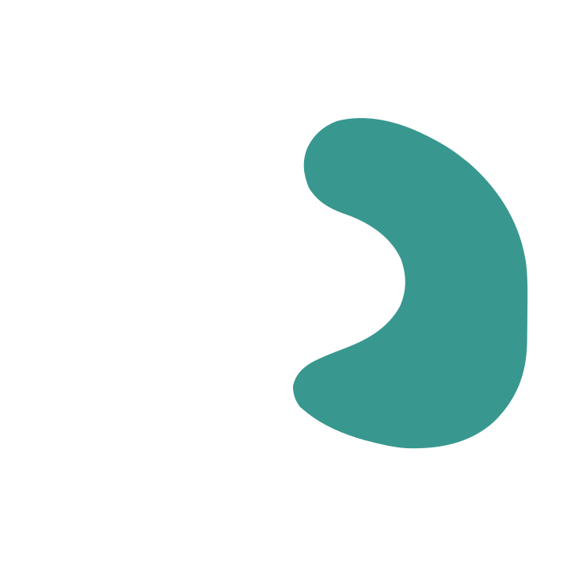

Reciprocal World Model
A vivid world
A continuing conversation
Sight, sound, and action in one ongoing interaction.

Two voices
One shared world
Duo explores reciprocal world modeling toward real-time co-presence through participation planning and joint audio-visual generation.
Shared experiences
See how people and generated characters respond to each other in real-time (causal-dmd) and offline (bi-direction) demos.
中文
This video could not load. Try opening the video file directly.
Moments
Shared moments
These examples from the training data show everyday exchanges, including practical guidance, shared planning, and companionship. See the data section of the technical report for details.